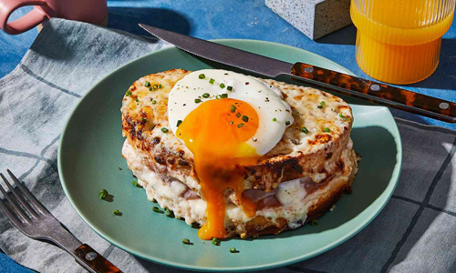

Croque Madame Sandwich

Ingredients
- 6 ounces unsalted butter, divided
- 2 tablespoons flour
- 1 cup whole milk
- 1 bay leaf
- 1/2 teaspoon kosher salt, plus more for seasoning
- 1/4 cup grated Parmesan
- 8 slices thick sourdough bread
- 8 to 12 slices good quality ham (about 3/4 pound)
- 12 ounces Gruyere cheese, grated, divided
- Nonstick spray
- 4 eggs
Directions
- Preheat the broiler.
-
Make the bechamel sauce: In a small saucepan, melt 1 ounce butter over
medium heat. Whisk in the flour and cook, stirring constantly, until you
smell the flour and butter cooking, 2 to 3 minutes. Do not allow it to
brown. Add the milk and bay leaf and cook, stirring from time to time,
until the mixture thickens like a soup, 10 to 12 minutes. Remove the bay
leaf and stir in the Parmesan. Transfer to a bowl to cool.
-
Arrange 4 slices of the bread on a flat surface. Top each with 2 to 3
slices of ham. Mix together half of the Gruyere cheese and the bechamel
sauce. Taste for seasoning. Spread a little of the sauce on top of the
ham and top each with another slice of bread.
-
Heat a large cast iron skillet and, when hot, add half of the remaining
butter. Add 2 of the sandwiches and brown on one side, 2 minutes. Turn
on the other side and brown 2 more minutes. Transfer to a baking sheet
and repeat with the remaining butter and sandwiches. Spread the
remaining bechamel on top of the sandwiches and top with the other half
of the Gruyere cheese.
-
Wipe any crumbs from the cast iron skillet and spray with nonstick
spray. Crack 4 eggs into the skillet, leaving a little room between
each. (Alternatively, fry 2 at a time). While the eggs are frying, place
the sandwiches under the broiler and broil until the top becomes golden
brown, 1 to 2 minutes. Season the eggs with salt and top each sandwich
with a fried egg. Serve immediately.